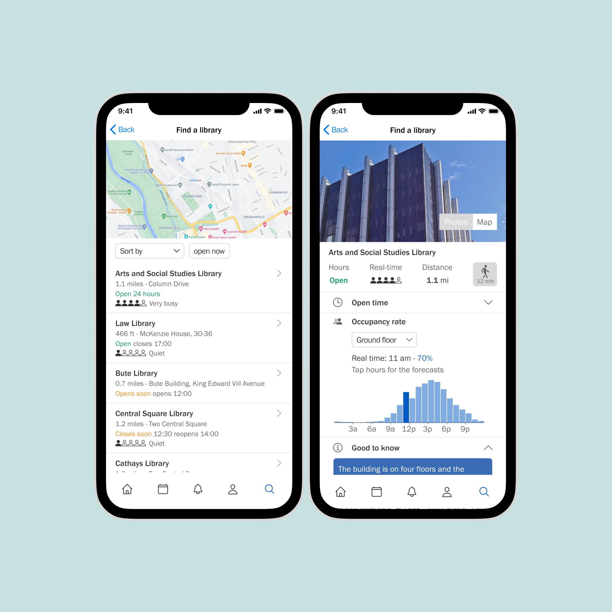
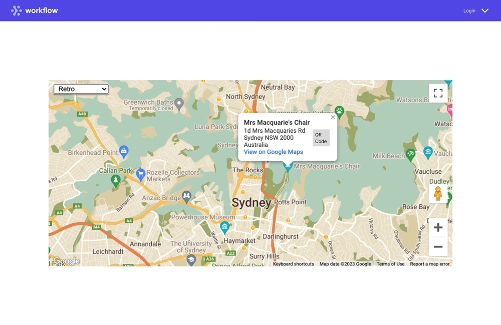

|
I’m a postgraduate student at Cardiff University, majoring in Software Engineering. I'm a developer as well as a designer, aiming to make art using code. I like software development, from UX design, frontend and backend development to DevOps. And I am always driven by my curiosity and the endless possibilities of technology. I just finished my placement year at the IT department of Cardiff University. Prior to that, I had two internships in frontend development and data analysis in Shanghai, China. |

|
|
|
|
Cardiff University, Cardiff, Wales, UK
M.S. in Software Engineering with a Professional Placement Year • Sep. 2021 to Sep. 2023 |
|
|
Shanghai Maritime University, Shanghai, China
B.E. in Electronic Information Engineering • Sep. 2017 to Jun. 2021 |
|
|
|
|
UX designer, Cardiff, Wales, UK
IT Department, Cardiff University • Jul.2022 - Jul.2023
• User Research: conducted usability
testing, accessibility testing, surveys, and interviews
|
|
|
Web Developer, Shanghai, China
Frontend group, 51Job • Jul.2020 - Sep. 2020
• Frontend Development: developed
responsive recruiting websites and mini-programs based on
Vue and TypeScript
|

|
|
Data Analysis Assistant, Shanghai, China
Data group, Zyllion Data • Feb.2020 - Apr. 2020
• Web Crawler: completed the web crawler
configuration in Python to collect new valuable data for
the product database
|

|
|
|
|  |
Personal porject Jul. 2023
• Implemented
prototypes
using React Native and
Expo.
|
|  |
Final year project of postgraduate (Full-stack developer) Related courses: Agile Development, Web Application, Programming Principles and Practice, DevOps, Delivering User Experience Jul. 2023 - Sep. 2023
A QR code-based area navigation site, allowing
organisations to create accounts and configure areas for
exploration. The site offers multiple interactions and
styles tailored to users' preferences and age groups.
|

|
Courses work of postgraduate (team & personal) Related courses: Agile Development, Web Application, Programming Principles and Practice, DevOps, Delivering User Experience Nov. 2021 - May. 2022
Teamwork (equal contribution):
Scrum, Git, frontend and backend
development; Personal work: quiz feature (test the user's
mental health status); DevOps
|

|
Course work of postgraduate (personal) Related courses: Manipulating and Exploiting Data May. 2022 Process initial data based on Python and Pandas. Created a data model and map these data to a MySQL database. Wrote the queries to analyse problems. Utilised eng_spacysentiment and spacy to perform knowledge extraction tasks such as sentiment analysis and similarity analysis on covid topics. |

|
Course work of postgraduate (personal) Related courses: Programming Principles and Practice Nov. 2021 A command-line program in Java, acts as an educational resource for students in the MSc Software Engineering course, providing short text-based lessons and a multiple-choice quiz at the end of each lesson. |

|
Graduation Project of Undergraduate (personal) May. 2021 An Android application based on Java, to fetch and visualise EEG signals on mobile devices, connected to MindWave (wearable device) using Bluetooth. The system provides real-time dynamic displays of brain waves. And was adopted by the university’s postgraduate researchers to apply in their human-computer interaction experiments. |

|
Personal project Mar. 2022 A personal website based on React. Using React Router, Context API, EmailJS, etc, support night mode and multiple devices. |

|
Personal project Feb. 2022 An employee system based on ReactJS + MySQL + Node.JS. Be able to add employee, update wage, and delete employee, etc. (Simple CRUD project). |

|
Personal project Nov. 2021 A practice to utilise Vue 3.0 + Spring Boot + myBatis + Element plus + Axios to fetch the data from database. |
|
Updated Jul. 2023 Thanks Jon Barron for this amazing template. |